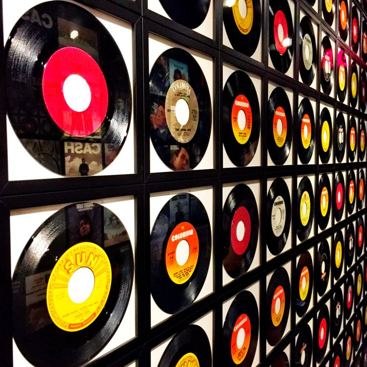

About
The crate, the rider, the rules
Everything a booker needs that isn't the music itself: who is playing, how the records are organised, what the booth must contain, and the terms the night runs on.
The story, briefly
Frankie Lowe started the way most vinyl DJs start: one deck, a borrowed mixer, and a paper round's worth of second-hand soul 45s from a market stall in Bury. The second 1210 took two summers. The first paid set was a wedding in 2009 where the brief was "nothing after 1985" — still the best brief anyone has ever written.
Fifteen years on, the collection is around 2,800 records and the work is split three ways: a monthly residency in Manchester, guest warm-ups and peak-time sets across the North, and private events where the client wants a floor full of people who don't usually dance. The curating is the same discipline in all three: know every record in the crate well enough to find it in the dark, in order, at the right moment.
Why vinyl only, in 2026? Not nostalgia — constraint. A crate holds what it holds, so the night is planned instead of scrolled. Every record was chosen, carried, and can be found by hand. When a room changes its mind, the answer is in the box, not in a search bar.
The requests policy, in plain words
Requests are read, not promised. Cards and pencils are on the tables — write it down. If it is in the crate and it fits where the night is going, it gets played; if it would break the arc, it doesn't, and that is the job you are paying for. Shouting a title over the booth doesn't work with vinyl: by the time the record is found, the moment has gone.

Crate philosophy
Five sections, five jobs
The crate is filed by the job a record does in the night, not by artist. A record's section decides when it may be played; its BPM and key decide what it may follow.
| Crate section | Years | BPM range | Job in the night |
|---|---|---|---|
| First hour — soul & Philly | 1967–80 | 88–112 | Arrivals. Conversation-plus volume; the floor is invited, not summoned. |
| Engine room — funk & Motown | 1965–79 | 97–118 | The groove that everything else stands on. Shoulders first, feet second. |
| The lift — disco 12-inches | 1973–80 | 103–126 | Extended intros, long blends, tempo walked up in small steps. |
| Peak — the big records | 1976–80 | 118–132 | Played sparingly and never early. Four to six a night is plenty. |
| Slow close — last records | 1967–80 | 82–106 | The landing. Familiar, warm, and finished before the lights are rude. |
Harmonic mixing, explained plainly
Records have keys, like any other music. Play two records together whose keys clash and the blend sounds seasick; match them and the mix can run for a minute without the floor noticing the join. The crate uses the Camelot wheel: every record is marked with a number and a letter (8A, 5A, 11A…). A blend is safe when the next record has the same mark, the relative mark (same number, other letter), or sits one step round the wheel. Anything further apart is played end-to-end — the outgoing record finishes, the incoming one starts — which is not a failure: it is how soul 45s were always played, and a short silence at the right moment is punctuation. Tempo matters the same way: a 1210's pitch fader moves a record about ±8%, so joins are planned in steps of two or three BPM, never leaps. The set builder on the home page applies exactly these rules.
Technical rider
What the booth must contain
Short, and not negotiable in the parts that protect the records. If your venue cannot meet it, say so in the enquiry — most of it can be brought, at the price printed on the fees list.
- Decks2× Technics SL-1210 (MK2 or later), serviced, pitch calibrated to zero at the centre detent, on a stable surface that does not bounce when the floor fills. A tested spare deck or a named local hire contact — written in since the all-nighter on the Nights page.
- MixerFour channels, per-channel EQ, a booth output with its own level control. Rotary preferred; any clean mixer is workable. No DJM effects unit is required — the records do the work.
- Frankie brings2× Ortofon Concorde cartridges plus spare styli, slipmats, headphones, a record weight, cleaning kit, and a torch. Cartridges are never shared and never borrowed.
- Booth monitorOne monitor at ear height with independent volume. Non-negotiable: mixing blind against a delayed room system is how bad blends happen.
- Power & positionOne 13A socket within two metres of the decks. Booth out of reach of drinks — a pint on a record box ends the night and the deposit conversation starts.
- Sound limitsFrankie plays to the venue's limiter and licence, full stop. Typical working ceiling is 96 dB(A) at the booth; the limiter is found at soundcheck, not discovered mid-set.
- Load-inSixty minutes before doors for soundcheck and pitch calibration. Parking or a drop-off within carrying distance: a full crate weighs about 25 kg, and a full night is three of them.
Booking terms
The small print, kept small
Confirmation: a date is held for seven days on enquiry and confirmed on a 25% deposit. The balance is due on the night, before the first record. Cancellation: full deposit back at 60+ days, half at 30–59 days, deposit kept inside 30 days — the date was held for you. Private events: the first dance and up to ten must-play records are agreed in writing a week ahead; anything handed over on the night joins the request cards, under the same policy. Illness or deck failure: if Frankie cannot play, the deposit returns in full and two named stand-in DJs — both vinyl, both briefed on this crate — are offered before any refund conversation ends.
Booking
The rider fits your room?
Then the rest is a conversation about dates and arcs. Enquiries are answered within two working days.
Start a booking enquiry